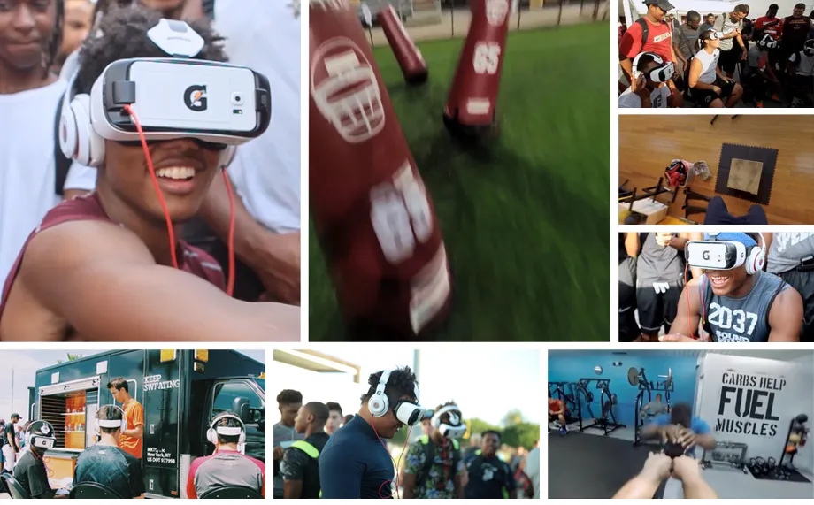
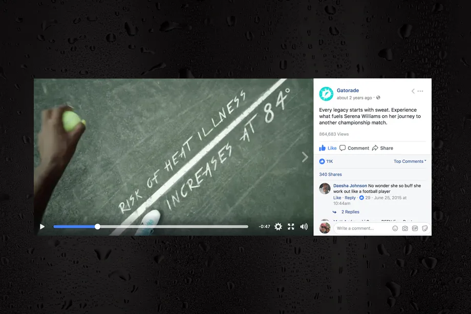
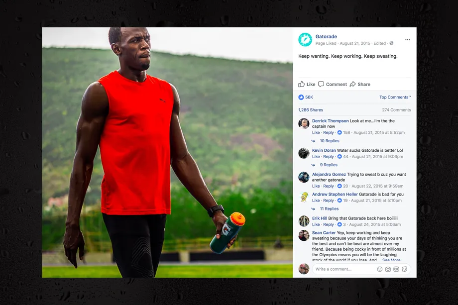
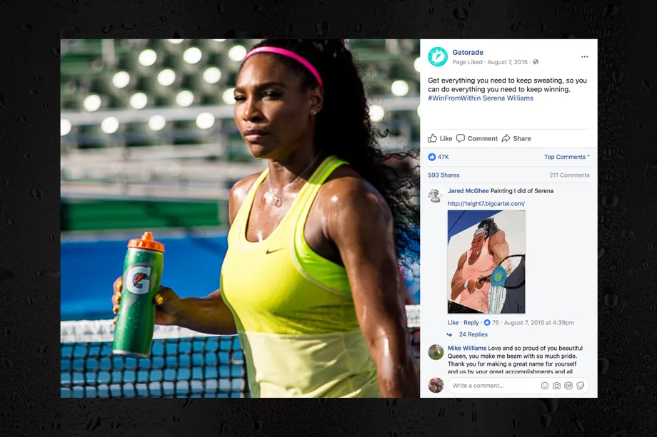
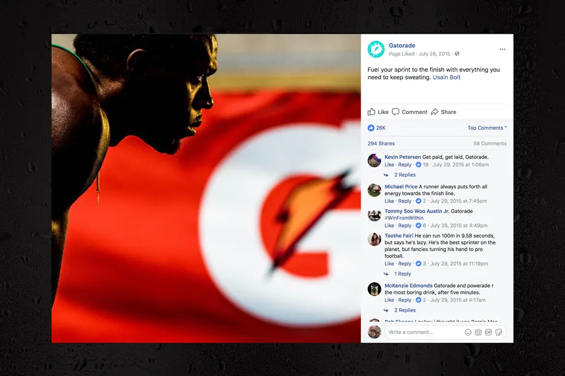
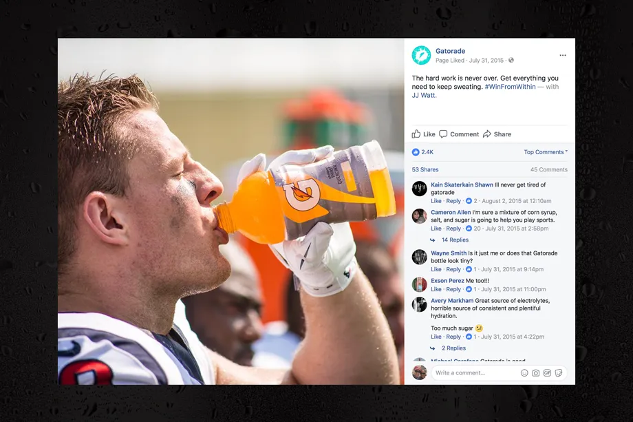
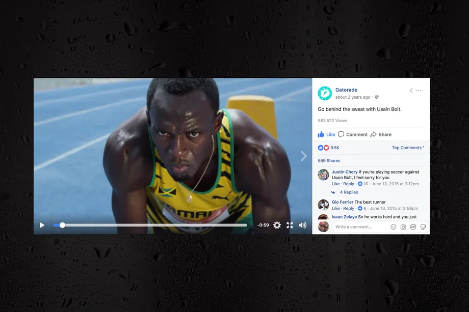
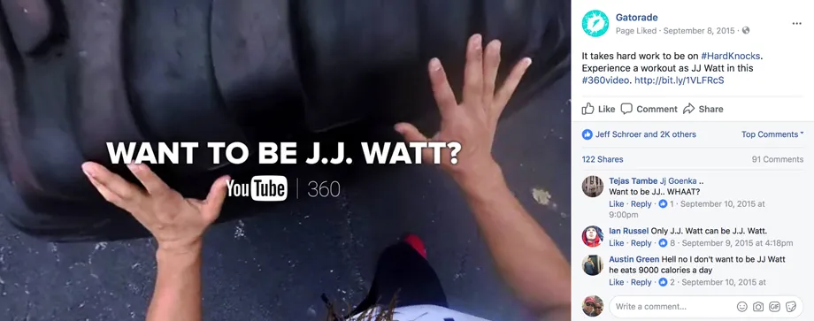

From the time we start playing sports, we pretend to be our idols.
To show teen athletes what it truly takes to become the best, we created a campaign that allowed teens to become their favorite pro athletes through a variety of immersive experiences.
We created first person POV videos featuring Usain Bolt and Serena Williams, a 360° Virtual Reality experience featuring JJ Watt, and partnered with Spotify to allow users to choose workout playlists that match the intensity and training style of the featured pros.
Usain & Serena POV Videos
JJ Watt VR / 360° Video
We created an immersive VR experience allowing aspiring pros to become JJ Watt. Using a custom-built VR array and binaural audio, we delivered an unprecedented live-action point of view of the speed, strength and sweat of JJ Watt.
VR Roadshow
The VR experience toured at sports camps and events across the county. It was also featured as one of the first branded YouTube 360° videos.

Spotify Integration
Partnering with Spotify, we were able to give athletes playlists that matched the musical tastes and training styles of our pros: Power, Agility & Speed.
Social Support







Credits
Director: Jake Oleson
- Executive Creative DirectorTony Snethen
- Group Creative DirectorMatt Bowne
- Creative DirectorMark Philip
- Associate Creative DirectorAdam LaRocca
- Senior Art DirectorErik Stark
- Senior CopywriterBryan Mohr
- CopywriterRobert Abasolo
- AgencyVML

Next project
Family Network
T-Mobile